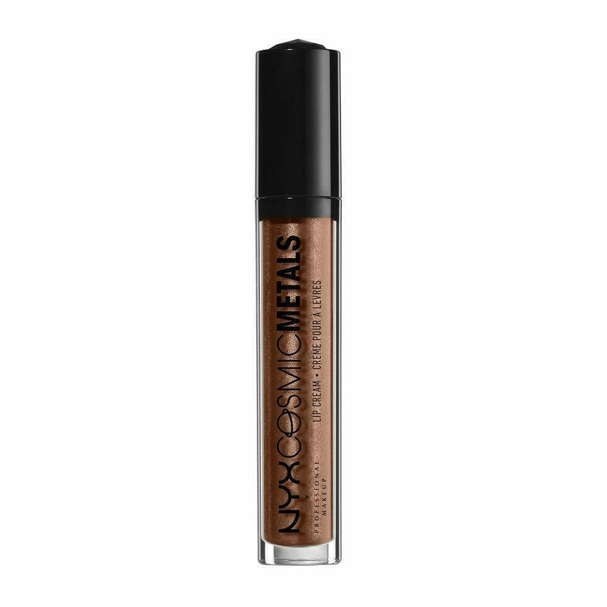
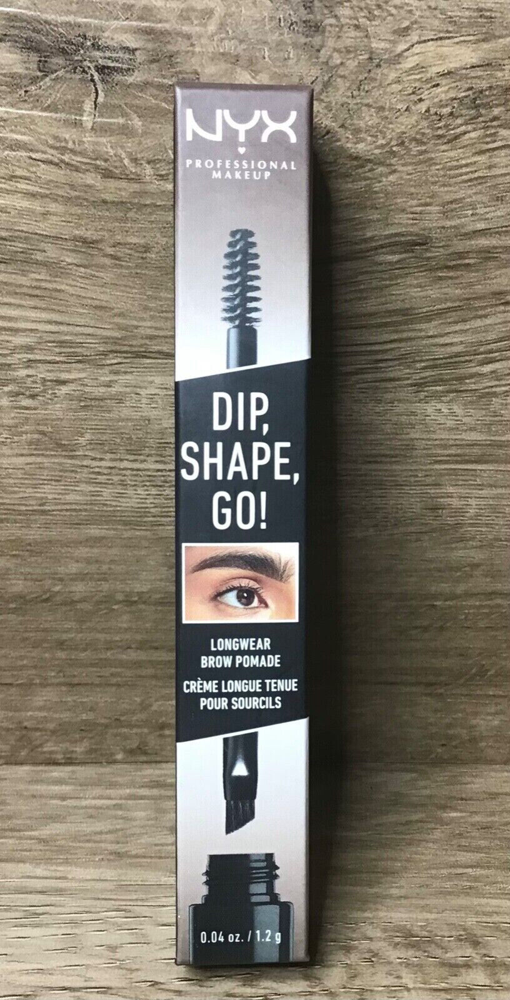
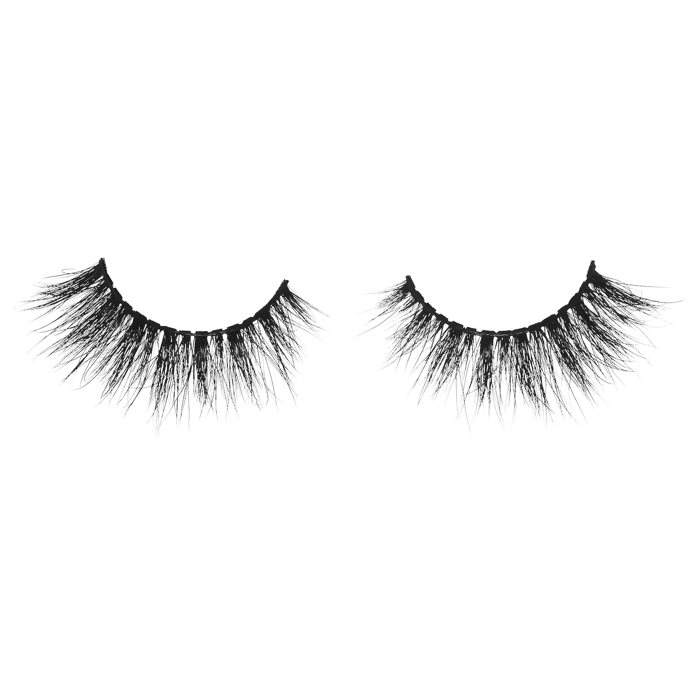

Registrate para recibir correos con notificaciones y poder seguir tus compras
Nuevos Productos!

Crema Labial
Maquillaje Profesional - Metales Cosmicos

NYX Pomada para Cejas
Maquillaje Profesional Dip

Pestañas 3D Heleen 30
Hechas 100% a mano de fibra sintética.
Consejos de temporada...
Aquí tienes algunos consejos de maquillaje para la temporada de primavera que te ayudarán a lucir fresca y radiante...
Jugosa:
Prioriza el cuidado de la piel para lograr un cutis saludable y luminoso.
Utiliza productos ligeros y poco cubrientes, como una BB cream, en lugar de bases pesadas.
Apuesta por productos que aporten luminosidad y brillo. en Crema:
Para un efecto de piel jugosa, el bronceador en crema es imprescindible.
Se ha convertido en un “must-have” para conseguir un resultado natural y radiante. Efecto Lifting:
Aplica los productos en sentido ascendente para “elevar” tus rasgos.
Esto crea un efecto lifting y realza tus facciones. Glass Skin o Piel de Cristal:
Busca una piel luminosa y transparente.
Utiliza iluminadores sutiles para lograr ese efecto "piel de cristal". Labios Nude:
Opta por tonos neutros en los labios para un look fresco y natural.
Los colores nude y rosa pastel serán protagonistas esta temporada. Perfilador y Gloss:
Define tus labios con un perfilador y añade un toque de gloss para un acabado jugoso. Eyeliner Geométrico:
Experimenta con delineados geométricos en los ojos.
Puedes jugar con diferentes formas y colores para darle un toque moderno a tu maquillaje
Aquí tienes algunos consejos de cuidado de la piel para la primavera que te ayudarán a mantener una piel radiante y saludable... Hidratación y Protección Solar:
A medida que suben las temperaturas, es crucial mantener la piel hidratada. Bebe suficiente agua y utiliza una crema hidratante ligera.
No olvides aplicar protector solar todos los días, incluso en días nublados. La protección solar es esencial para prevenir el daño causado por los rayos UV. Exfoliación Suave:
Exfoliar la piel una o dos veces por semana ayudará a eliminar las células muertas y a mantenerla limpia y fresca.
Opta por exfoliantes suaves para evitar irritaciones. Limpieza Diaria:
Limpia tu rostro diariamente para eliminar el exceso de grasa, el sudor y las impurezas.
Utiliza un limpiador suave y adecuado para tu tipo de piel. Cuidado de los Labios:
Los labios también necesitan atención. Utiliza un bálsamo labial hidratante para evitar que se resequen.
Exfolia tus labios suavemente con un cepillo de dientes para eliminar la piel seca. Alimentación Saludable:
Recuerda que la piel refleja lo que comes. Una dieta equilibrada y rica en nutrientes se traducirá en una piel más luminosa.
Consume alimentos ricos en antioxidantes, como frutas y verduras. Cuidado de las Manos y Uñas:
Hidrata tus manos con una crema específica para manos.
Mantén tus uñas limpias y bien cuidadas para evitar que se quiebren o se debiliten. Descanso y Estrés:
Duerme lo suficiente para permitir que la piel se regenere durante la noche.
Controla el estrés, ya que puede afectar negativamente la salud de la piel
Aquí tienes algunos consejos para cuidar tu cabello durante la primavera y mantenerlo saludable y radiante... Sigue una Dieta Equilibrada:
Evita los déficits nutricionales para mantener el pelo sano.
Incorpora alimentos ricos en nutrientes como huevos y frutos secos para frenar la caída del cabello. Controla el Estrés:
El estrés y la caída del cabello están relacionados.
Evita los picos de estrés prolongados, ya que pueden afectar la salud capilar. Productos Capilares Específicos:
Utiliza productos capilares adecuados para tu tipo de cabello.
Escoge aquellos que se ajusten a tus necesidades y fomenten la calidad del pelo. Tratamientos Capilares de Mantenimiento:
Considera tratamientos capilares para fortalecer y nutrir tu cabello.
Mantén una rutina regular para mantener su salud y apariencia